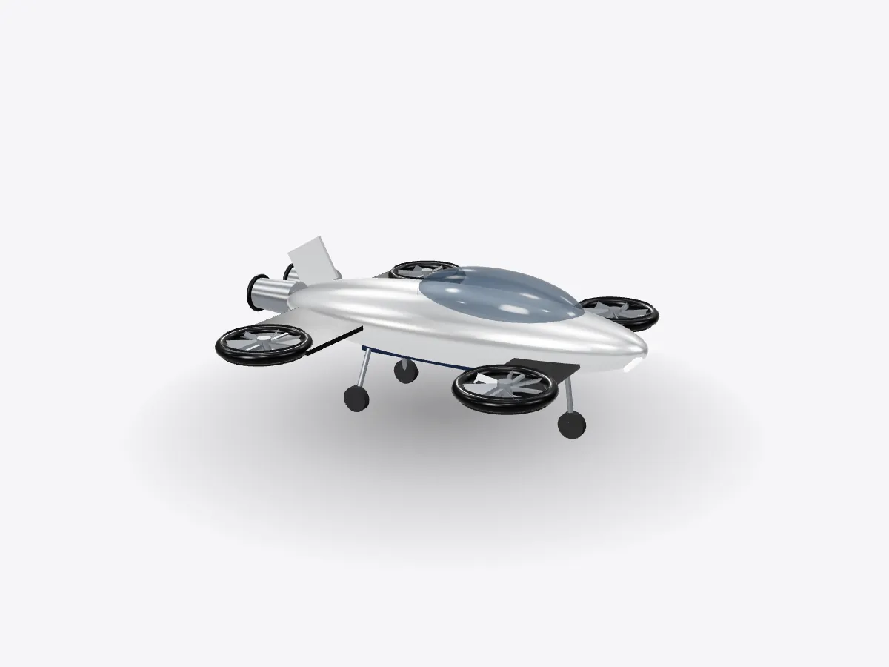

01 / 05
Overview
7 parts, one idea.
Explore a concept flying roadster in 3D: ducted lift fans, rear thrusters, wings, battery and landing gear. Take off, hover and fly through rings.
Drag to orbit, pinch or scroll to zoom, tap any part.
How it works · Vehicles
Take off like a drone, cruise like a plane. This concept roadster shows the ideas behind electric vertical take-off and landing aircraft.

Scores are saved on this device only.
01 / 05
Overview
Explore a concept flying roadster in 3D: ducted lift fans, rear thrusters, wings, battery and landing gear. Take off, hover and fly through rings.
Drag to orbit, pinch or scroll to zoom, tap any part.
02 / 05
Explode
Keep scrolling and every part slides away from the centre, so you can see how they fit together.
03 / 05
Slice
A section plane sweeps through the model as you scroll. Pick an axis and set the depth yourself.
04 / 05
Parts
Pick a part or tap a glowing dot. It lights up and everything else fades back.
05 / 05
Facts
Distributed electric propulsion uses several smaller motors instead of one big engine.
A wing's lift grows with the square of airspeed.
Hovering needs far more power than cruising on wings.
Explained
This roadster is a concept, not a real product, but it's built on the same principles as the electric vertical take-off and landing aircraft, or eVTOLs, being developed today. It has two ways of staying in the air. At low speed four ducted fans blow air downwards, so it can lift off straight up and hover like a drone. Once it's moving, its short wings and front canards make lift the way an aeroplane's wings do, and the lift fans can ease off.
That switch matters because hovering is expensive. To hover, the fans have to push down enough air every second to balance the aircraft's whole weight, which takes a lot of power. A wing, on the other hand, makes lift from the air flowing over it, and that lift grows with the square of airspeed: double the speed and you get roughly four times the lift. So the most efficient flight is fast, wing-borne cruise, with hovering kept to the take-off and landing.
Instead of one big engine, the roadster uses several electric motors, an approach called distributed electric propulsion. Electric motors are small, light for their power and easy to control precisely, so a flight computer can vary each fan's speed many times a second to keep the aircraft level. With several motors, the loss of one can be handled by the others. Putting the fans inside ducts shields the spinning blades and can raise the thrust each fan makes at low speed.
All of those motors draw on a lithium-ion battery mounted low in the body. Batteries store much less energy per kilogram than aviation fuel, which is the main reason electric aircraft today have limited range. Every design decision, from the streamlined body to the efficient wings, is about stretching that stored energy as far as possible.
Open play mode and choose Fly. Hold Up to lift off and climb, use the stick or the arrow keys to turn and accelerate, and steer through as many rings as you can before the clock runs out. The rear thrusters push you forwards and the lift fans hold your altitude when you let go.
D3DDD
D3DDD makes them: product cutaways, exploded views, architectural renders and technical drawings.